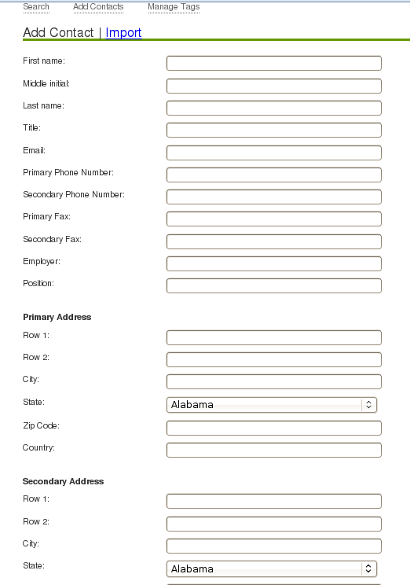
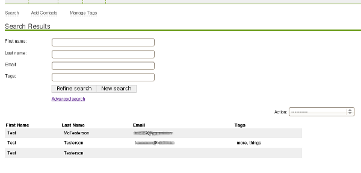
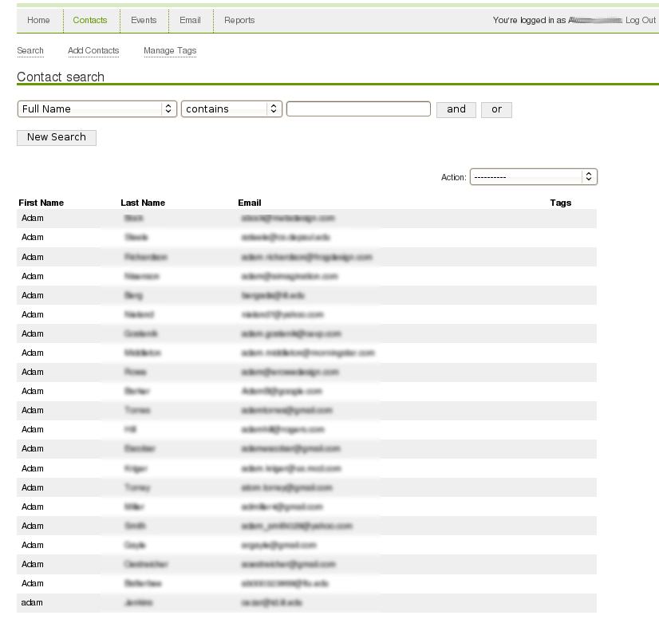
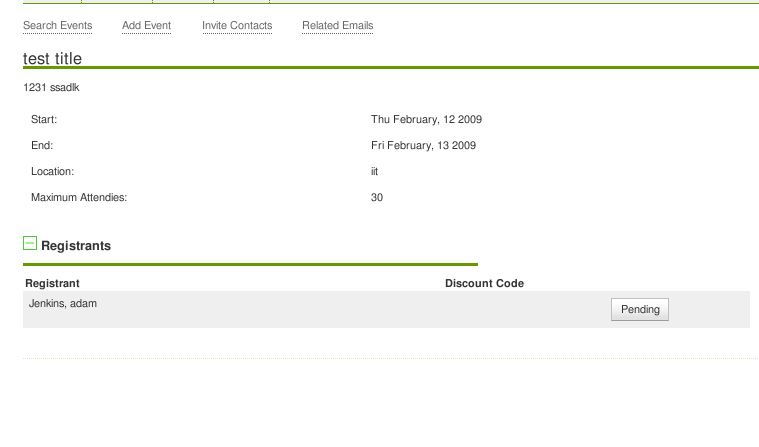

New:
OpenConnect is a web application that helps you manage contacts, events and email blasts for your organization. It provides a simple to use interface allowing you to search, edit, and tag contacts that you use inside your organization. OpenConnect also provides reports and facilitates emailing large groups. Finally, OpenConnect allows you to create and invite people to events, tracking who is attending and communications with them.
Old:
OpenConnect manages contacts and allows search based on entered information, including tags, addresses, and other data. Reports can be generated from these searches and outputted in different formats. It can track events and registration for those events. Lastly, it allows sending out emails to contacts in these searches and later tracing which contacts recieved were sent which emails and if it was about an event.
OpenConnect features can be broken up into the areas of Contacts, Events, Emails, and Reports. Each is mostly self-explanitory as to it’s scope, and are explained in more detail below.
Contacts section of OpenConnect helps you perform general contact record keeping by allowing you to store a contacts name, email, address, phone number, academic history, and notes.
Image: Adding a contact.
Contacts can be searched using either a simple interface, or an advanced search.
The advanced search lets you search any of the contacts fields for an exact match, containing, or not containing whatever you like. Each of these can be combined using ands and ors to craft your advanced search.
OpenConnect supports tagging contacts also. Every contact can be tagged with multiple tags to facilitate searching for contacts. Contacts can be tagged individually, or an entire search can be tagged. Tags can also be mass-renamed.
Tagging helps you search for a contact based on any grouping you choose. For example, you can tag all your volunteers, or all your giving members so that later you can easily mass mail them about upcomming events.
Searches can be saved for later use allowing you to easily select the recipients of an outgoing email. In the future saved searches may be integrated into other parts of OpenConnect.
OpenConnect allows you to manage events. Once you have created an event, you can invite contacts to register for the event. OpenConnect will let you created an invite email that provides a registration link to the invitees. When an invitee follows this link the registration form will be pre-populated with what information we have for the person. Once they register, they become pending until a OpenConnect user approves the registration. If a payment link is provided, it will be included in the email sent to the registrant.
Custom messages can be included with the pending and complete registration messages.
In addition, you can select an event when you send an email out and later look up all emails sent out in relation to an event.
OpenConnect provides you with an interface to send out email to a contact search making it easy to email thousands of people without having to manually edit a recipient list. The emails allow for rich text so wording can be style for a more professional looking email. The system will automatically create an alternative text only email that is sent along with the original for readers who can not see rich email.
OpenConnect allows you to save drafts of emails for sending later.
You can also create email templates for use by anyone on the system. Templates are basically the same as a draft email. The have a subject, recipient list, related event, etc. The difference is that any user of the system can open a template, make changes, and send out an email using the template. This will not delete the template.
Reports are contact searches that can be customized as to what data they list for each result. The results can be saved and then either viewed online, outputted to a spreadsheet, or outputted to a pdf file.